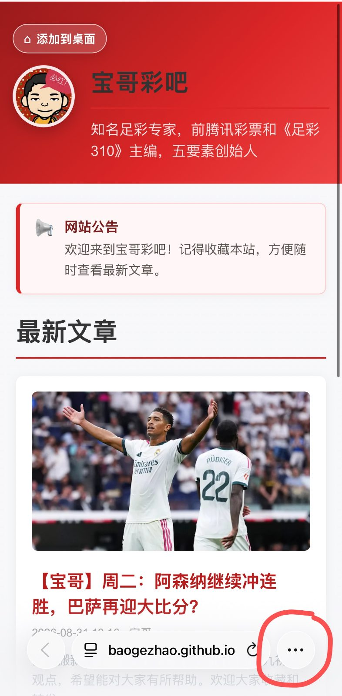
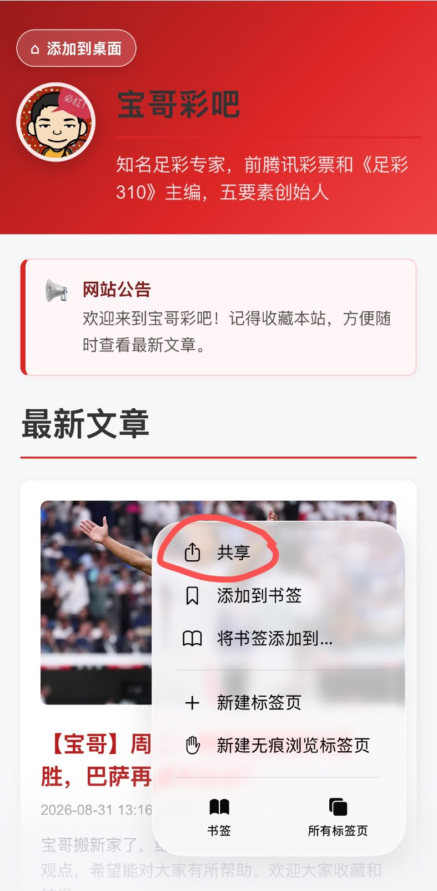
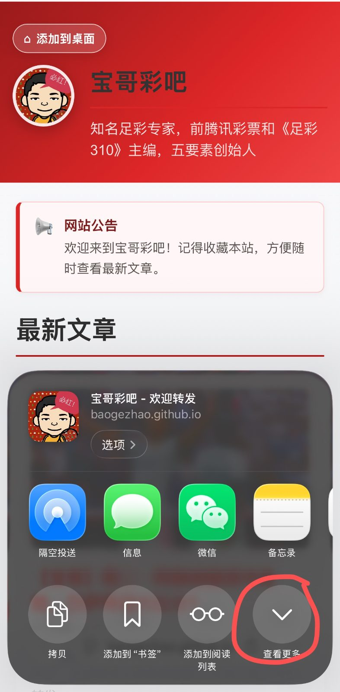
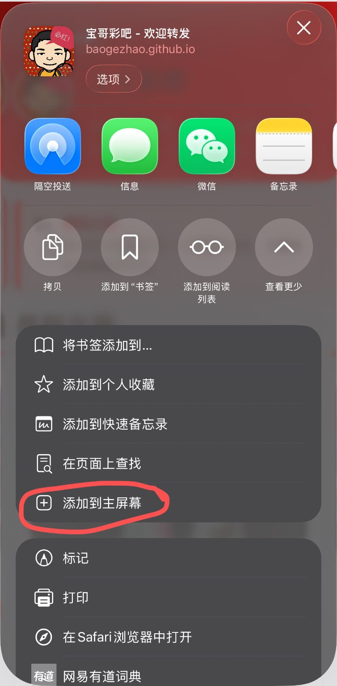
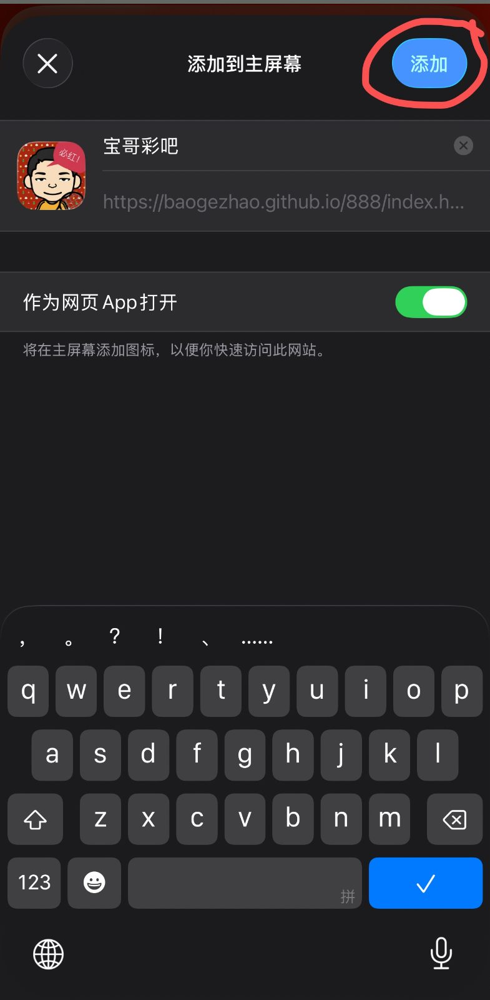

好消息！
免安装，
一键就可以查看到宝哥每天的推荐！
对于苹果手机用户——
1、在首页右下角点击三个圆点

2、选择”共享“

3、选择”查看更多“

4、选择”添加到主屏幕“

5、把”作为网页APP打开“的按钮打开，点击”添加”

6、恭喜你，“宝哥彩吧”就出现在你的主屏幕了，一键就可以快速查看宝哥的推荐了！
记得收藏和转发到更多好友！谢谢对宝哥的支持！
好消息！




5、把”作为网页APP打开“的按钮打开，点击”添加”

6、恭喜你，“宝哥彩吧”就出现在你的主屏幕了，一键就可以快速查看宝哥的推荐了！
记得收藏和转发到更多好友！谢谢对宝哥的支持！